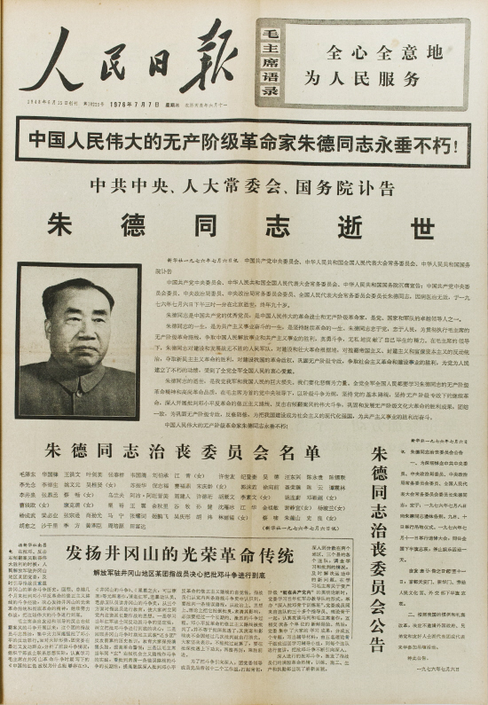
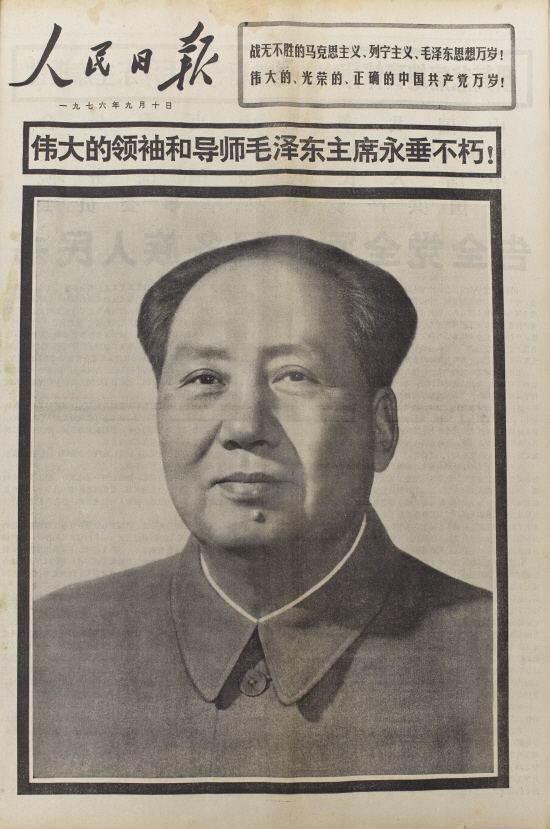

今天在写回顾六四系列，正写到“老胡驾崩之后，朝廷对他的评价”。考虑到列位看官（尤其是80后90后的看官）都不太熟悉党国的政治语言，因此也就不懂得解读官方的讣告和悼词。所以，俺就顺便写一个帖子扫盲一下。
党国高层一旦有人去见马克思，官方照例都要发一个讣告。对于位高权重者，朝廷还会开一个隆重的追悼会。无论是讣告还是追悼会上念的悼词，都相当于官方对死者一生的总结，也就是俗话所说的盖棺定论。很多同学以为讣告和悼词反正都大同小异，没啥花样。其实捏，这里面有很多讲究。
党是非常在意等级观念滴。平时你如果留意官方新闻，就会发现：凡是有多名国家领导人出现的场合，其姓名都要经过严格的排序。谁排前谁排后，那是一点都含糊不得。而高官的讣告和悼词，作为朝廷的盖棺定论，更要体现出等级差别。
看讣告，第一句话最关键。这句话的前半段，通常由 N 个并列的名词短语构成。如果死者只是普通的官员，那么这些名词短语通常就是死者生前担任的主要职务的列表；万一死者比较牛B的话，光列出其生前担任的职务，已经无法彰显其牛逼之处。这时候，就得用一些【华丽的】封号来体现。
下面就说说这些封号是如何运用滴。
首先说说体现政治光环的封号。在常见的政治封号中，“马克思主义者”是级别最高滴。通常只有开国元老之类的人物，才有资格受用哦。在该称号前面，还要加上一个定语，比如：伟大的、杰出的、坚定的、忠诚的。语文好的同学，一眼就可以看出这几个定语之间的层次关系。
1. 伟大的的马克思主义者
最高级的定语，自然是“伟大的”。所以，被称为“伟大的马克思主义者”，显然就是最高级中的最高级。享用这个头衔的人，那真的是屈指可数（10个手指头就数得出）。比如老毛、老周、老朱、老刘、老邓，就属于此头衔。毛刘周朱这4人，也就是老版本人民币的百元大钞上，那4个老头。其中，老刘的情况比较特殊。他在文革被整死的时候，官方连屁都不放一个，更甭提讣告了。所以，老刘的封号是文革后追赠滴。至于老邓，被吹捧为第二代领导核心，自然也能享用这一封号。
2. 杰出的的马克思主义者
仅次于“伟大的”这个定语的，就是“杰出的”。比如陈云就获此封号。
3. 坚定的马克思主义者
获此封号的，比如有：李先念、杨尚昆、邓颖超之类。比较奇怪的是，像王震之流（既无能力又无威望），居然也获此称号。
4. 忠诚的马克思主义者
定语中，级别最低的，就是“忠诚的”。获此封号的，比如：张闻天。
5. 马克思主义者（无定语）
在这里特别说明一下，胡耀邦的讣告中，没有提及“马克思主义者”的封号。但是，赵紫阳在追悼会上念悼词的时候，却多出来一个“马克思主义者”，而且非常奇怪的是，没有加定语。所以，胡耀邦是唯一一个获得了无定语的“马克思主义者”封号的党国大员。
从上面可以看出，获得“马克思主义”封号的，大都是第一代和第二代领导人。据说从第三代开始，就只有极个别的人能获此封号了。
能获得“共产主义战士”封号的，就相对就多一些了。能够拿到这个封号的，通常都是政治局委员（党）或者副总理级别（政）或者是军委副主席级别（军）。
这个封号也要加定语。它的定语包括了前面提到的“马克思主义者”的4个定语。另外还多了一个“久经考验的”。与“马克思主义者”封号不同的地方在于，“共产主义战士”的封号前面，可以同时加多个定语。比如胡耀邦的封号是：久经考验的忠诚的共产主义战士。显然，定语越多就越牛B。
补充一下：少数特牛的非政治人士（比如钱学森），居然也能拿到此称号。俺就纳闷了，钱学森干的活跟“共产主义战士”有个鸟关系啊。
前面两种是常见的政治封号。此外，还有极个别特殊的政治封号，往往仅用于某个特定的人。
比如：宋庆龄的政治封号是：“爱国主义、民主主义、国际主义和共产主义的伟大战士”；康生的政治封号是：“光荣的反修战士”。
考虑到很多网友没听说过康生，稍微补充一下。此人在文革中炙手可热，地位绝对不亚于四人帮。他是老周和老邓的死对头。所以，80年代老邓掌权后，专门召开中央会议讨论康生的问题，并宣布：撤销康生的悼词、撤销一切封号、永远开除出党、骨灰迁出八宝山。你想啊，人都死了还"永远开除出党"，我们的朝廷就老喜欢干这种脱裤子放屁的事儿。
前面说的是政治封号。接着再说说职业封号。职业封号，顾名思义，就是跟死者生前干的职业有关。
最高级的职业封号，就是“某某家”。俗话常说：成名成家、牛B到家。可见“家”的地位是很高滴。一般而言，“某某家”的分量要比“共产主义战士”的分量还大。
具体说来，比较常见的有：革命家、政治家、军事家；比较少见的有：理论家、战略家、外交家。
1. 革命家
获此封号的人，通常是老资历的（通常是建党建国的元老）。政界、军界都有可能享受此封号。同样的，该封号也要加定语。它的定语跟前面的“共产主义战士”的定语类似，俺就不再啰嗦。
2. 政治家
顾名思义，政治家就是在政界混得比较好的。这种人多半都混到了政治局常委，要么就是元老级的（比如80年代的八元老）。像王震这个军中的老粗，就因为他也是八元老之一，也混了个“政治家”的封号。
另外，极少数军界人物（比如：元帅中的朱、陈、叶）也能拿到此封号。
3. 军事家
顾名思义，军事家就是在军界混得比较好的。显然，10大元帅以及多数大将都拿到"军事家"的封号。另外，部分没有军职的家伙（比如，老周、老邓），也拿到了此封号。
在所有拿到“军事家”封号的人当中，评价最高的是刘伯承。他的封号是：伟大的无产阶级革命家、军事家、马克思主义军事理论家、军事教育家、中国人民解放军的缔造者之一。（仔细数了数，一个出现4个“家”）
关于林彪，比较特殊，稍微补充一下：他摔死在蒙古的时候，党国没有发讣告。到了80年代朝廷评定“中国人民解放军军事家”的时候，有33人上榜，其中也有他。
4. 理论家
“理论家”封号中的“理论”二字，主要是指政治理论。拿到此封号的家伙，多半是那些特别能忽悠，说起理论来一套一套的，把别人唬得一愣一愣的。所以享有此封号的，貌似不太多。老毛、老刘、康生、是其中的代表。（刚才提到的刘伯承，属于军事理论家，不属此列）
5. 战略家
貌似只有老毛一人拿到此封号。
6. 外交家
貌似只有老周和老邓拿到此封号。
最后，再来说说“某某领导人”这个封号。这个封号比前面的那些封号，级别都要低，所以用的人也最多。
该封号的定语比较多且复杂，而且这些定语可以多个并用。俺大致看了一下，有如下定语（排名不分先后）：“长期担任”、“久经考验的”、“主要的”、“卓越的”、“优秀的”、“杰出的”。所以，该封号的定语，不像“马克思主义者”的定语那样，可以简单排出优先级。要具体情况具体分析了。
1. 政界
对于政界，该封号通常叫“党和国家领导人”。一般来说，只要能进中央政治局的家伙，都能拿到此称号；如果是政治局常委，就更没问题了。当然，政治局常委的定语，自然要多一些。
如果你搞不清楚“中央委员会”、“中央政治局”、“政治局常委会”这些概念的区别，可以看看俺在“这里”的扫盲介绍。
2. 军界
对于军界，有两种叫法：“党和军队领导人”、“国家和军队领导人”。只要进入中央军委的家伙，就有希望拿到此封号。
3. 军政通吃
还有少数人是军政通吃的。比如杨尚昆和刘华清的封号中，都提到“党、国家和军队的卓越领导人”。
聊完讣告和悼词，再来说说追悼会的规格。主要体现在如下几个方面：
有党国的一把手念悼词，属于级别最高。比如胡耀邦的追悼会，是赵紫阳念悼词；邓小平的追悼会是江泽民念悼词，都属于此列。稍微差一些的，就是党国二把手或三把手读悼词（通常是总理或人大委员长）。
显然，最隆重的地方就是人民大会堂。对于政界，即使是政治局常委也未必有资格去那里开（比如黄菊就不够格）；对于军界，一般要元帅级别才能到那里去开。
最后，有哪些党国大员参加追悼会，也能体现出死者的待遇有多高。即便你请不来党国一把手念悼词，但如果能请党国一把手驾临，规格也是很高滴。举个反例：周恩来死的时候，老毛就故意不参加追悼会。这样一来，追悼会的规格就大大降低了。
顺便跑题一下。
其实老周死的时候，讣告的规格差得要命，仅仅只有4个名词短语（中国共产党的优秀党员，中国人民伟大的无产阶级革命家，杰出的共产主义战士，党和国家久经考验的卓越领导人）。既没有提到“马克思主义者”，也没有“政治家、军事家、外交家”。
俺前面说，“毛刘周朱”都拿到“伟大的马克思主义者”封号。其实老周是在文革后，才追赠滴；老周的“政治家、军事家、外交家”的封号，也是文革后追赠滴。
肯定有网友要纳闷了：为啥会这样捏？根据如今官方的说法，是四人帮故意降低老周治丧的规格。其实捏，如果老毛没有发话，四人帮怎敢如此？倘若仔细分析史料，不难发现毛周二人长期有矛盾。到了文革后期，老毛把主要的政治对手都摆平了，最后就只剩下老周。但是老周这个人，又非常圆滑，属于不倒翁型的。鉴于老周做事情滴水不漏，老毛一直没找着破绽下手。而且周在军中的亲信不少，根基很深。在没有充分理由的情况下，老毛又不敢来硬的。最后，两人只好玩“长寿竞赛”，比谁活得长。表面上看，虽然老毛比老周多活了几个月。但是，最终是老周的继承人（邓）轻松搞掉老毛的继承人（华）。
哇靠，一不小心，篇幅又写得有点长。下面俺简单说说。
所谓人民日报的规格，就是指讣告以何种排版样式发布在人民日报上。人民日报作为党国忽悠老百姓的主要喉舌，一贯是很讲究等级森严滴。所以，从人民日报发布讣告的细节，也可以看出死者的政治地位。
下面，俺从低到高，分别举例。
最差劲的一类讣告，连头版都挤不进去。这种官员多半没啥知名度。
知名度稍微高一些的官员，讣告可以挤进头版，但只能呆在头版右下角的某个豆腐干大小的角落里。
当某个讣告有资格放在人民日报的头版头条，基本上死者已经有足够大的知名度了。比如胡耀邦的讣告就是头版头条。以下是当年刊登在人民日报上，胡耀邦的讣告。

比“头版头条”更牛B的讣告，是“头版通栏标题”。所谓的“通栏标题”，就是标题从版面的左边横贯到右边，当中不分栏。想看看这样的讣告吗？以下是朱德当年的讣告。

最后，给大伙儿瞧一瞧天朝最牛B的讣告（没有之一）。不用问，最牛B的讣告，当然是天朝太祖毛腊肉啦。像这么霸气的讣告，估计在天朝灭亡之前，不会再有第二个了。

根据俺今天介绍的细节，你就可以从党国的官方宣传中，分析出某个翘辫子的朝廷大员，其政治地位如何。比方说，赶明儿老江死了，大伙儿就可以照此分析一番。
俺博客上，和本文相关的帖子（需翻墙）：
《回顾六四》（系列）
党国高层一旦有人去见马克思，官方照例都要发一个讣告。对于位高权重者，朝廷还会开一个隆重的追悼会。无论是讣告还是追悼会上念的悼词，都相当于官方对死者一生的总结，也就是俗话所说的盖棺定论。很多同学以为讣告和悼词反正都大同小异，没啥花样。其实捏，这里面有很多讲究。
★讣告和悼词的规格
党是非常在意等级观念滴。平时你如果留意官方新闻，就会发现：凡是有多名国家领导人出现的场合，其姓名都要经过严格的排序。谁排前谁排后，那是一点都含糊不得。而高官的讣告和悼词，作为朝廷的盖棺定论，更要体现出等级差别。
看讣告，第一句话最关键。这句话的前半段，通常由 N 个并列的名词短语构成。如果死者只是普通的官员，那么这些名词短语通常就是死者生前担任的主要职务的列表；万一死者比较牛B的话，光列出其生前担任的职务，已经无法彰显其牛逼之处。这时候，就得用一些【华丽的】封号来体现。
下面就说说这些封号是如何运用滴。
◇政治封号之“马克思主义者”
首先说说体现政治光环的封号。在常见的政治封号中，“马克思主义者”是级别最高滴。通常只有开国元老之类的人物，才有资格受用哦。在该称号前面，还要加上一个定语，比如：伟大的、杰出的、坚定的、忠诚的。语文好的同学，一眼就可以看出这几个定语之间的层次关系。
1. 伟大的的马克思主义者
最高级的定语，自然是“伟大的”。所以，被称为“伟大的马克思主义者”，显然就是最高级中的最高级。享用这个头衔的人，那真的是屈指可数（10个手指头就数得出）。比如老毛、老周、老朱、老刘、老邓，就属于此头衔。毛刘周朱这4人，也就是老版本人民币的百元大钞上，那4个老头。其中，老刘的情况比较特殊。他在文革被整死的时候，官方连屁都不放一个，更甭提讣告了。所以，老刘的封号是文革后追赠滴。至于老邓，被吹捧为第二代领导核心，自然也能享用这一封号。
2. 杰出的的马克思主义者
仅次于“伟大的”这个定语的，就是“杰出的”。比如陈云就获此封号。
3. 坚定的马克思主义者
获此封号的，比如有：李先念、杨尚昆、邓颖超之类。比较奇怪的是，像王震之流（既无能力又无威望），居然也获此称号。
4. 忠诚的马克思主义者
定语中，级别最低的，就是“忠诚的”。获此封号的，比如：张闻天。
5. 马克思主义者（无定语）
在这里特别说明一下，胡耀邦的讣告中，没有提及“马克思主义者”的封号。但是，赵紫阳在追悼会上念悼词的时候，却多出来一个“马克思主义者”，而且非常奇怪的是，没有加定语。所以，胡耀邦是唯一一个获得了无定语的“马克思主义者”封号的党国大员。
从上面可以看出，获得“马克思主义”封号的，大都是第一代和第二代领导人。据说从第三代开始，就只有极个别的人能获此封号了。
◇政治封号之“共产主义战士”
能获得“共产主义战士”封号的，就相对就多一些了。能够拿到这个封号的，通常都是政治局委员（党）或者副总理级别（政）或者是军委副主席级别（军）。
这个封号也要加定语。它的定语包括了前面提到的“马克思主义者”的4个定语。另外还多了一个“久经考验的”。与“马克思主义者”封号不同的地方在于，“共产主义战士”的封号前面，可以同时加多个定语。比如胡耀邦的封号是：久经考验的忠诚的共产主义战士。显然，定语越多就越牛B。
补充一下：少数特牛的非政治人士（比如钱学森），居然也能拿到此称号。俺就纳闷了，钱学森干的活跟“共产主义战士”有个鸟关系啊。
◇特殊的政治封号
前面两种是常见的政治封号。此外，还有极个别特殊的政治封号，往往仅用于某个特定的人。
比如：宋庆龄的政治封号是：“爱国主义、民主主义、国际主义和共产主义的伟大战士”；康生的政治封号是：“光荣的反修战士”。
考虑到很多网友没听说过康生，稍微补充一下。此人在文革中炙手可热，地位绝对不亚于四人帮。他是老周和老邓的死对头。所以，80年代老邓掌权后，专门召开中央会议讨论康生的问题，并宣布：撤销康生的悼词、撤销一切封号、永远开除出党、骨灰迁出八宝山。你想啊，人都死了还"永远开除出党"，我们的朝廷就老喜欢干这种脱裤子放屁的事儿。
◇职业封号之“某某家”
前面说的是政治封号。接着再说说职业封号。职业封号，顾名思义，就是跟死者生前干的职业有关。
最高级的职业封号，就是“某某家”。俗话常说：成名成家、牛B到家。可见“家”的地位是很高滴。一般而言，“某某家”的分量要比“共产主义战士”的分量还大。
具体说来，比较常见的有：革命家、政治家、军事家；比较少见的有：理论家、战略家、外交家。
1. 革命家
获此封号的人，通常是老资历的（通常是建党建国的元老）。政界、军界都有可能享受此封号。同样的，该封号也要加定语。它的定语跟前面的“共产主义战士”的定语类似，俺就不再啰嗦。
2. 政治家
顾名思义，政治家就是在政界混得比较好的。这种人多半都混到了政治局常委，要么就是元老级的（比如80年代的八元老）。像王震这个军中的老粗，就因为他也是八元老之一，也混了个“政治家”的封号。
另外，极少数军界人物（比如：元帅中的朱、陈、叶）也能拿到此封号。
3. 军事家
顾名思义，军事家就是在军界混得比较好的。显然，10大元帅以及多数大将都拿到"军事家"的封号。另外，部分没有军职的家伙（比如，老周、老邓），也拿到了此封号。
在所有拿到“军事家”封号的人当中，评价最高的是刘伯承。他的封号是：伟大的无产阶级革命家、军事家、马克思主义军事理论家、军事教育家、中国人民解放军的缔造者之一。（仔细数了数，一个出现4个“家”）
关于林彪，比较特殊，稍微补充一下：他摔死在蒙古的时候，党国没有发讣告。到了80年代朝廷评定“中国人民解放军军事家”的时候，有33人上榜，其中也有他。
4. 理论家
“理论家”封号中的“理论”二字，主要是指政治理论。拿到此封号的家伙，多半是那些特别能忽悠，说起理论来一套一套的，把别人唬得一愣一愣的。所以享有此封号的，貌似不太多。老毛、老刘、康生、是其中的代表。（刚才提到的刘伯承，属于军事理论家，不属此列）
5. 战略家
貌似只有老毛一人拿到此封号。
6. 外交家
貌似只有老周和老邓拿到此封号。
◇职业封号之“某某领导人”
最后，再来说说“某某领导人”这个封号。这个封号比前面的那些封号，级别都要低，所以用的人也最多。
该封号的定语比较多且复杂，而且这些定语可以多个并用。俺大致看了一下，有如下定语（排名不分先后）：“长期担任”、“久经考验的”、“主要的”、“卓越的”、“优秀的”、“杰出的”。所以，该封号的定语，不像“马克思主义者”的定语那样，可以简单排出优先级。要具体情况具体分析了。
1. 政界
对于政界，该封号通常叫“党和国家领导人”。一般来说，只要能进中央政治局的家伙，都能拿到此称号；如果是政治局常委，就更没问题了。当然，政治局常委的定语，自然要多一些。
如果你搞不清楚“中央委员会”、“中央政治局”、“政治局常委会”这些概念的区别，可以看看俺在“这里”的扫盲介绍。
2. 军界
对于军界，有两种叫法：“党和军队领导人”、“国家和军队领导人”。只要进入中央军委的家伙，就有希望拿到此封号。
3. 军政通吃
还有少数人是军政通吃的。比如杨尚昆和刘华清的封号中，都提到“党、国家和军队的卓越领导人”。
★追悼会的规格
聊完讣告和悼词，再来说说追悼会的规格。主要体现在如下几个方面：
◇谁负责念悼词
有党国的一把手念悼词，属于级别最高。比如胡耀邦的追悼会，是赵紫阳念悼词；邓小平的追悼会是江泽民念悼词，都属于此列。稍微差一些的，就是党国二把手或三把手读悼词（通常是总理或人大委员长）。
◇追悼会在哪里开
显然，最隆重的地方就是人民大会堂。对于政界，即使是政治局常委也未必有资格去那里开（比如黄菊就不够格）；对于军界，一般要元帅级别才能到那里去开。
◇有哪些党国要员出席
最后，有哪些党国大员参加追悼会，也能体现出死者的待遇有多高。即便你请不来党国一把手念悼词，但如果能请党国一把手驾临，规格也是很高滴。举个反例：周恩来死的时候，老毛就故意不参加追悼会。这样一来，追悼会的规格就大大降低了。
顺便跑题一下。
其实老周死的时候，讣告的规格差得要命，仅仅只有4个名词短语（中国共产党的优秀党员，中国人民伟大的无产阶级革命家，杰出的共产主义战士，党和国家久经考验的卓越领导人）。既没有提到“马克思主义者”，也没有“政治家、军事家、外交家”。
俺前面说，“毛刘周朱”都拿到“伟大的马克思主义者”封号。其实老周是在文革后，才追赠滴；老周的“政治家、军事家、外交家”的封号，也是文革后追赠滴。
肯定有网友要纳闷了：为啥会这样捏？根据如今官方的说法，是四人帮故意降低老周治丧的规格。其实捏，如果老毛没有发话，四人帮怎敢如此？倘若仔细分析史料，不难发现毛周二人长期有矛盾。到了文革后期，老毛把主要的政治对手都摆平了，最后就只剩下老周。但是老周这个人，又非常圆滑，属于不倒翁型的。鉴于老周做事情滴水不漏，老毛一直没找着破绽下手。而且周在军中的亲信不少，根基很深。在没有充分理由的情况下，老毛又不敢来硬的。最后，两人只好玩“长寿竞赛”，比谁活得长。表面上看，虽然老毛比老周多活了几个月。但是，最终是老周的继承人（邓）轻松搞掉老毛的继承人（华）。
★人民日版的规格
哇靠，一不小心，篇幅又写得有点长。下面俺简单说说。
所谓人民日报的规格，就是指讣告以何种排版样式发布在人民日报上。人民日报作为党国忽悠老百姓的主要喉舌，一贯是很讲究等级森严滴。所以，从人民日报发布讣告的细节，也可以看出死者的政治地位。
下面，俺从低到高，分别举例。
◇不在头版
最差劲的一类讣告，连头版都挤不进去。这种官员多半没啥知名度。
◇头版非头条
知名度稍微高一些的官员，讣告可以挤进头版，但只能呆在头版右下角的某个豆腐干大小的角落里。
◇头版头条
当某个讣告有资格放在人民日报的头版头条，基本上死者已经有足够大的知名度了。比如胡耀邦的讣告就是头版头条。以下是当年刊登在人民日报上，胡耀邦的讣告。
◇头版头条通栏标题
比“头版头条”更牛B的讣告，是“头版通栏标题”。所谓的“通栏标题”，就是标题从版面的左边横贯到右边，当中不分栏。想看看这样的讣告吗？以下是朱德当年的讣告。
◇最牛B的讣告
最后，给大伙儿瞧一瞧天朝最牛B的讣告（没有之一）。不用问，最牛B的讣告，当然是天朝太祖毛腊肉啦。像这么霸气的讣告，估计在天朝灭亡之前，不会再有第二个了。
★结尾
根据俺今天介绍的细节，你就可以从党国的官方宣传中，分析出某个翘辫子的朝廷大员，其政治地位如何。比方说，赶明儿老江死了，大伙儿就可以照此分析一番。
俺博客上，和本文相关的帖子（需翻墙）：
《回顾六四》（系列）
版权声明
本博客所有的原创文章，作者皆保留版权。转载必须包含本声明，保持本文完整，并以超链接形式注明作者编程随想和本文原始地址：
https://program-think.blogspot.com/2011/12/chinese-leader-death.html
本博客所有的原创文章，作者皆保留版权。转载必须包含本声明，保持本文完整，并以超链接形式注明作者编程随想和本文原始地址：
https://program-think.blogspot.com/2011/12/chinese-leader-death.html